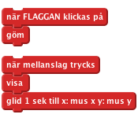
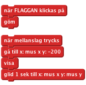
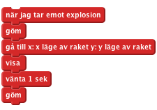
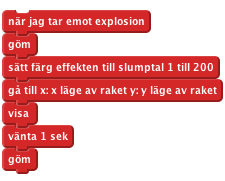
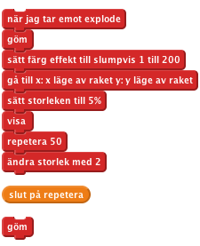

Introduktion
I det här projektet ska vi skapa ett fyrverkeri över en stad.
STEG 1: Skapa en raket som flyger mot muspekaren
Låt oss importera olika bilder för spelet
Checklista
- Starta ett nytt Scratchprojekt. Radera katten genom att högerklicka på den och välja Radera.
- Ersätt bakgrunden med outdoor/city-with-water
- Använd ny sprite från fil för att lägga till en raketsprite till projektet (använd klädseln Resources/Rocket.png)
- Göm raketen när den gröna flaggan har klickats på.
Nu vill vi att raketen ska röra sig mot muspekaren när musen har klickats.
- Lägg till ett "när mellanslag trycks"-block, och låt under detta raketen synas och glida mot muspekaren

Testa ditt projekt
Klicka på den gröna flaggan, placera muspekaren över scenen och tryck på mellanslag.
Visas raketen och rör den sig mot musen?
Vad händer om du rör musen och slår mellanslag igen?
- Fyrverkerier brukar inte flyga från sida till sida, så låt oss se till att den alltid glider mot musen från botten av skärmen. Innan vi visar raketen, använd "gå till"-blocket för att säga åt den
att röra sig från botten av skärmen, men stanna på samma ställe horisontellt.

Testa ditt projekt
Klicka på den gröna flaggan, placera musen över scenen och tryck på mellanslag.
Flyger raketen mot musen från botten av skärmen? Vad händer om du rör musen och trycker mellanslag igen?
- Slutligen, låt oss få detta att fungera genom att använda musknappen istället för mellanslag. För att göra detta kan vi avsluta vårt script i en för alltid om musknappen?.
Byt sedan när mellanslag trycks-kontrollblocket med när flaggan klickats på, och sist men inte minst se till att raketen är gömd när allt börjar.

Testa ditt projekt
Klicka på den gröna flaggan, tryck sedan på musknappen någonstans på scenen. Klicka igen på en annan punkt.
Saker att pröva
- Försök att göra några raketer lite långsammare eller snabbare än andra.
- Försök att ändra raketens riktning innan den glider mot muspekaren så att den får en båge.
STEG 2: Gör så att raketen exploderar
Checklista
- Första steget för att få raketen att explodera är att se till att det spelas ett bang-ljud (resources\bang) innan den börjar röra på sig, och sedan gömma sig då den når musen. För att importera ett ljud, gå till Ljud-fliken och klicka på import.

- Nu ska vi göra så att raketen sänder ett nytt meddelande när den exploderar. Vi kommer att lyssna efter detta meddelande senare.

Testa ditt projekt
Klicka på den gröna flaggan.
Se till att raketen spelar ett ljud och göms när den når musen.
Checklista
- Skapa en ny sprite från fil, Resources/firework1.png
- När den tar emot explosionsmeddelandet ska den gömma sig och sedan flyttas till raketens position genom att använda "gå till"-blocket, för att sedan försvinna igen en sekund senare.

Testa ditt projekt
Skicka en annan flygande raket.
Blir den ersatt med en explosionsbild när den exploderar?
Vad händer om du håller musknappen nere medan du rör på musen? (Oroa dig inte, vi ska fixa det här senare).
STEG 3: Gör varje explosion unik
- Nu kan vi göra varje explosion mer unik genom att använda "sätt färg effekten"-blocket, och låta det välja slumpmässiga färger mellan 1 och 200 innan det visas.

Testa ditt projekt
Klicka på den gröna flaggan.
Har varje explosion olika färg?
- Låt oss lägga till ett antal möjliga explosionsbilder som klädslar, genom att använda Resources/firework2.png och Resources/firework3.png, och växla mellan dem för varje raket, innan den visas.
Testa ditt projekt
Klicka på den gröna flaggan.
Har varje raket olika explosionsbilder?
- Slutligen, låt oss göra så att explosionen blir större efter att raketen exploderar! Istället för att vänta en sekund, sätt storleken på spriten till 5% innan den visas, och sedan när den visas öka storleken med 2 femtio gånger genom att använda ett repetitionsblock.

Testa ditt projekt
Klicka på den gröna flaggan.
Sprider sig explosionsbilden från mitten av raketen och växer sakta?
Saker att pröva
Varför inte försöka göra varje explosion unik genom att ändra storlek och förstoringshastighet?
Steg 4: Fixa "Sänd"-buggen
Kommer du ihåg att vi tidigare hade problem med att hålla ner musknappen?
Detta inträffar på grund av att när raketen sänder explosionen så kommer den att omedelbart repetera om-loopen och skicka ut ett nytt explosionsmeddelande innan den senaste har slutat synas. I datorvärlden kallas sådana problem för "buggar".
- För att ordna detta kan vi ersätta "sända"-blocket med ett "sända och vänta"-block. På det sättet kommer loopen inte att repeteras förrän explosionen har exploderat färdigt.

Testa ditt projekt
Klicka på den gröna flaggan, håll nere musknappen och flytta muspekaren runt scenen.
Syns explosionsbilden på rätt plats och vid rätt tid?
Spara ditt projekt
Bra gjort du är klar, nu kan du njuta av spelet!
Glöm inte att du kan dela ditt spel med alla dina vänner och din familj genom att klicka på "Dela ut" på menyn!